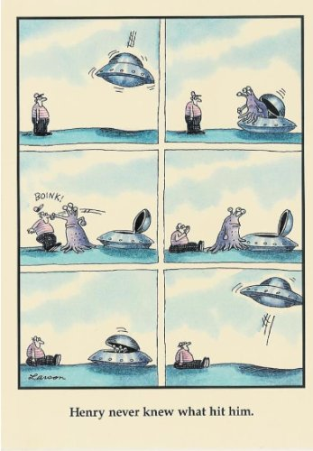

Well! That was an interesting experience.
Many lovely readers of last week’s Mind-Tickler about validation became absolutely, positively, most definitely convinced it was written about you.
Y’know, you personally.
Which was not the case. Saying again for those in the back-
it was not about you.
Not that you’ll believe me.
You’re quite certain I invalidated you, specifically, by writing a general email about validation.
Interesting that that particular topic sparked so much betrayal, hurt, anger, and unsubscribes.
The topic of Validating the Self caused hot feelings, walls, and defenses to rise up in a big way.
Let’s face it, you want that darned self validated, dammit.
In every moment, by everyone you come across.
Everyone needs to legitimize you, your okness, your painful feelings, your trauma, your choices, your personality, your likes and dislikes.
Otherwise there’s risk of discovering, over and over and over, that that treasured and protected self/ego/ person doesn’t exist and is therefore
not possible to validate.
The self would very much prefer to not acknowledge this.
So instead, everything is perceived through the lens, the filter, of- Is this about me? Can this be made personal?
Making all outside circumstances and other people’s opinions usable, in order to define… you.
In fact, if something can not be made personal, then there’s no concern about it. There’s no interest in anything that has nothing to do with you.
If it is personal though, then it better be right. Otherwise there’ll be hell to pay.
In the form of bad feelings.
One can be made happy or sad or angry depending on whether someone or something verifies you “properly.”
Almost as if what happens out there actually, repeatedly, perpetually, createsyou.
Hmmm. Perhaps it's starting to become clear why last week's Mind-Tickler may have been upsetting to you.
Perhaps it's starting to become clear why being validated feels so important. Or why it feels so painful and infuriating if said validation doesn’t happen.
The appearance of existence and survival of the self depends on being confirmed by others.
The last Tickler felt very personal and didn't verify the "right" you.
We understand this here at Mind-Tickler headquarters.
And we understand that your self has a right to its preferences and attempts at survival, and a right to want what it wants.
Whether Ticklers say the right things, liked things, or not.
We also understand that none of this can be helped, and that not one bit of this is important to see or understand.
Ever.
And though we can’t always soothe the savage Self-beast, and can’t always tickle it into having peaceful feelings,
hopefully you can know that The Mind-Tickler is always written with the You in mind, anyway.
Your likes, dislikes and strategies. Your self, your being, your existence.
You are always front and center.
Every Mind-Tickler is about what you really are, and whatever may stand in the way of knowing what that is.
Even if they may not be about your self,
personally.
That, at least, is something we can
validate.
About you, personally
